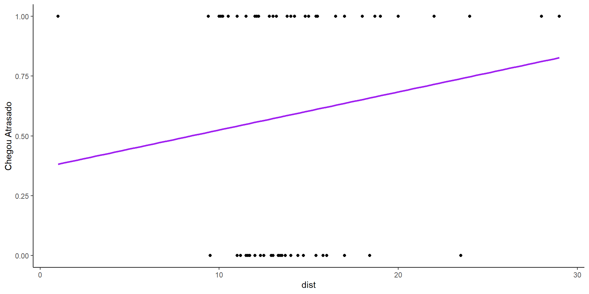

Aprendizado Supervisionado
Supervisionado e Não Supervisionado

Supervisionado e Não Supervisionado
Modelos lineares generalizados
Modelo de Regressão
Dados
| estudante | tempo | distancia |
|---|---|---|
| Gabriela | 15 | 8 |
| Dalila | 20 | 6 |
| Gustavo | 20 | 15 |
| Letícia | 40 | 20 |
| Luiz | 50 | 25 |
| Leonor | 25 | 11 |
| Ana | 10 | 5 |
| Antônio | 55 | 32 |
| Júlia | 35 | 28 |
| Mariana | 30 | 20 |
Visualização
Forma linear
… Para descrever a relação entre a distância e tempo
Modelo de regressão
- Resultado, Y: variável que descreve os resultado de interesse
- Preditor, X: variável usada para ajudar a entender a variabilidade no resultado
\[Y_i = \beta_0 + \beta_1 X_i + e_i\]

Modelo de regressão
Um modelo de regressão é uma função que descreve a relação entre o resultado, \(Y\), e o preditor, \(X\).
\[\displaystyle \begin{aligned} Y &= \color{black}{\textbf{Modelo}} + \text{Error} \\[8pt] &= \color{black}{\mathbf{f(X)}} + \epsilon \\[8pt] &= \color{black}{\boldsymbol{\mu_{Y|X}}} + \epsilon \end{aligned}\]
Modelo de regressão
\[\displaystyle \begin{aligned} Y &= \color{purple}{\textbf{Modelo}} + \text{Error} \\[8pt] &= \color{purple}{\mathbf{f(X)}} + \epsilon \\[8pt] &= \color{purple}{\boldsymbol{\mu_{Y|X}}} + \epsilon \end{aligned} \]
Modelo de regressão + residuos
\[\begin{aligned} Y &= \color{purple}{\textbf{Modelo}} + \color{blue}{\textbf{Error}} \\[8pt] &= \color{purple}{\mathbf{f(X)}} + \color{blue}{\boldsymbol{\epsilon}} \\[8pt] &= \color{purple}{\boldsymbol{\mu_{Y|X}}} + \color{blue}{\boldsymbol{\epsilon}} \\[8pt] \end{aligned}\]
Regressão linear simples
Regressão linear simples
Para modelar a relação entre um resultado quantitativo (\(Y\)) e um único preditor quantitativo (\(X\)): \[\Large{Y = \beta_0 + \beta_1 X + e}\]
- \(\beta_1\): Inclinação da relação entre \(X\) e \(Y\)
- \(\beta_0\): Intercepto da relação entre \(X\) e \(Y\)
- \(X\): Variável explicativa
- \(e\) : Erro (residual)
Regressão linear simples
Objetivo: desenvolver uma equação linear que apresente a relação entre uma variável dependente e uma explicativa
\[\Large{\hat{Y} = \hat{\beta}_0 + \hat{\beta}_1 X}\]
- \(\hat{\beta}_1\): Inclinação estimada da relação entre \(X\) e \(Y\)
- \(\hat{\beta}_0\): Intercepto estimado da relação entre \(X\) e \(Y\)
- Sem termo de erro!
Residual
O termo de erro deverá capturar o efeito das demais variáveis não incluidas no modelo.
\[\text{residual} = \text{observado} - \text{previsto} = y - \hat{y}\]
Condições relacionadas aos resíduos
1. A somatória dos residuos deve ser zero: \(\sum_{i=1}^n u_i = 0\)
Condições relacionadas aos resíduos
2. A somatória dos resíduos ao quadrado é a mínima possível: \(\sum_{i=1}^n u_i^n = \text{mín}\)

Estimando valores para \(\hat{\beta}_1\) e \(\hat{\beta}_0\)
Análise inicial
\[\widehat{\text{tempo}} = 5.878 + 1.419 \times \text{distancia}\]
Call:
lm(formula = tempo ~ distancia, data = tempodist)
Residuals:
Min 1Q Median 3Q Max
-10.6081 -3.9358 0.6419 5.1351 8.6486
Coefficients:
Estimate Std. Error t value Pr(>|t|)
(Intercept) 5.8784 4.5323 1.297 0.230788
distancia 1.4189 0.2355 6.025 0.000314 ***
---
Signif. codes: 0 '***' 0.001 '**' 0.01 '*' 0.05 '.' 0.1 ' ' 1
Residual standard error: 6.719 on 8 degrees of freedom
Multiple R-squared: 0.8194, Adjusted R-squared: 0.7969
F-statistic: 36.3 on 1 and 8 DF, p-value: 0.0003144Análise inicial
\(R^2\) coeficiente de ajuste do modelo, indica o percentual de variância da variável \(Y\) que é devido ao comportamento de variação conjunta da(s) variável(is) explicativa(s).
\(R^2\)
Teste F
Teste F: Analisa se pelo menos um dos \(\beta'\)s é significativo para a explicação de \(Y\)
Hipóteses:
\(H_0 :\beta_1 = \beta_2 = \beta_3 = ...\beta_k = 0\)
\(H_1 : pelo\ menos\ um\ \beta \neq 0\)
Espera-se rejeitar a hipótese nula, ou seja, que pelo menos um dos \(\beta'\)s seja estatisticamente diferente de zero para explicar o comportamento de Y - p-valor abaixo de nível crítico (0,05, usualmente)
Teste \(t\)
Analisa individualmente cada um dos parâmetros, identificando se os mesmo são estatisticamente diferentes de zero.
Hipóteses:
\(H_0: \beta = 0\)
\(H_1: \beta \neq 0\)
Espera-se o mesmo fato, em termos de significância estatística, do que o discutido para o teste F.
Predição
Suponha que um estudante more à 20 km de distância. De acordo com esse modelo, qual é o tempo previsto para chegar?
\[ \begin{aligned} \widehat{\text{tempo}} &= 5.878 + 1.419 \times \text{distancia} \\ &= 5.878 + 1.419 \times 20 \\ &= 34.258 \end{aligned} \]
É importante realizar inferências sobre o comportamento de uma variável \(Y\) dentreo dos limites de variação de \(X\).
Regressão Múltipla
Regressão Múltipla
Qual a diferença entre um modelo de regressão simples para um modelo de regressão múltipla?
A forma funcional passa a ser a seguinte: \[\displaystyle{Y_i = \beta_0 + \beta_1 X_{1i} + \beta_2 X_{2i} + \beta_3 X_{3i}... + \beta_k X_{ki} + \epsilon}\]
A regressão linear múltipla apresenta a mesma lógica apresentada para a regressão linear simples.
Regressão Múltipla
A inlcusão de mais variáveis dependerá da teoria subjacente e de estudos anteriores, bem como da experiência e do bom senso do pesquisador.
| estudante | tempo | distancia | semafaro |
|---|---|---|---|
| Gabriela | 15 | 8 | 0 |
| Dalila | 20 | 6 | 1 |
| Gustavo | 20 | 15 | 0 |
| Letícia | 40 | 20 | 1 |
| Luiz | 50 | 25 | 2 |
| Leonor | 25 | 11 | 1 |
| Ana | 10 | 5 | 0 |
| Antônio | 55 | 32 | 3 |
| Júlia | 35 | 28 | 1 |
| Mariana | 30 | 20 | 1 |
\[\widehat{\text{tempo}_i} = \alpha + \beta_1.dist_i + \beta_2.sem_i\]
Análise Regressão Múltipla
\[\widehat{\text{tempo}} = 8.1512 + 0.7972 \times \text{distancia} + 8.2963\times \text{semafaro}\]
Call:
lm(formula = tempo ~ distancia + semafaro, data = tempodist_s)
Residuals:
Min 1Q Median 3Q Max
-3.7693 -2.3280 -0.7238 0.3260 7.6084
Coefficients:
Estimate Std. Error t value Pr(>|t|)
(Intercept) 8.1512 2.9201 2.791 0.02685 *
distancia 0.7972 0.2264 3.522 0.00971 **
semafaro 8.2963 2.2835 3.633 0.00836 **
---
Signif. codes: 0 '***' 0.001 '**' 0.01 '*' 0.05 '.' 0.1 ' ' 1
Residual standard error: 4.228 on 7 degrees of freedom
Multiple R-squared: 0.9374, Adjusted R-squared: 0.9195
F-statistic: 52.43 on 2 and 7 DF, p-value: 6.13e-05Análise Regressão Múltipla
Quando houver o intuito de se compararem os resultados das estimações de dois modelos com quantidades distintas de parâmetros e/ou obtidos a partir de amostras com tamanhos diferentes, faz-se necessário o uso do R² ajustado.
\[\displaystyle R_{ajust}^2 = 1 - \frac{n - 1}{n - k}(1 - R^2)\]
- \(n\) tamanho da amostra
- \(k\) é o número de parâmetros do modelo
Comparando Regressões
Regressão Simples
Call:
lm(formula = tempo ~ distancia, data = tempodist)
Residuals:
Min 1Q Median 3Q Max
-10.6081 -3.9358 0.6419 5.1351 8.6486
Coefficients:
Estimate Std. Error t value Pr(>|t|)
(Intercept) 5.8784 4.5323 1.297 0.230788
distancia 1.4189 0.2355 6.025 0.000314 ***
---
Signif. codes: 0 '***' 0.001 '**' 0.01 '*' 0.05 '.' 0.1 ' ' 1
Residual standard error: 6.719 on 8 degrees of freedom
Multiple R-squared: 0.8194, Adjusted R-squared: 0.7969
F-statistic: 36.3 on 1 and 8 DF, p-value: 0.0003144Regressão Múltipla
Call:
lm(formula = tempo ~ distancia + semafaro, data = tempodist_s)
Residuals:
Min 1Q Median 3Q Max
-3.7693 -2.3280 -0.7238 0.3260 7.6084
Coefficients:
Estimate Std. Error t value Pr(>|t|)
(Intercept) 8.1512 2.9201 2.791 0.02685 *
distancia 0.7972 0.2264 3.522 0.00971 **
semafaro 8.2963 2.2835 3.633 0.00836 **
---
Signif. codes: 0 '***' 0.001 '**' 0.01 '*' 0.05 '.' 0.1 ' ' 1
Residual standard error: 4.228 on 7 degrees of freedom
Multiple R-squared: 0.9374, Adjusted R-squared: 0.9195
F-statistic: 52.43 on 2 and 7 DF, p-value: 6.13e-05Regressão Múltipla
| estudante | tempo | distancia | semafaro | periodo | perfil |
|---|---|---|---|---|---|
| Gabriela | 15 | 8 | 0 | manha | calmo |
| Dalila | 20 | 6 | 1 | manha | moderado |
| Gustavo | 20 | 15 | 0 | manha | moderado |
| Letícia | 40 | 20 | 1 | tarde | agressivo |
| Luiz | 50 | 25 | 2 | tarde | agressivo |
| Leonor | 25 | 11 | 1 | manha | moderado |
| Ana | 10 | 5 | 0 | manha | calmo |
| Antônio | 55 | 32 | 3 | tarde | calmo |
| Júlia | 35 | 28 | 1 | manha | moderado |
| Mariana | 30 | 20 | 1 | manha | moderado |
Variáveis qualitativas
São variáveis categóricas que representam um atributo por meio de combinação binária (0 para a ausência ou 1 para presença).
| estudante | tempo | distancia | semafaro | periodo | perfil |
|---|---|---|---|---|---|
| Gabriela | 15 | 8 | 0 | manha | calmo |
| Dalila | 20 | 6 | 1 | manha | moderado |
| Gustavo | 20 | 15 | 0 | manha | moderado |
| Letícia | 40 | 20 | 1 | tarde | agressivo |
| Luiz | 50 | 25 | 2 | tarde | agressivo |
| Leonor | 25 | 11 | 1 | manha | moderado |
| Ana | 10 | 5 | 0 | manha | calmo |
| Antônio | 55 | 32 | 3 | tarde | calmo |
| Júlia | 35 | 28 | 1 | manha | moderado |
| Mariana | 30 | 20 | 1 | manha | moderado |
Variáveis qualitativas
Para uma variável categórica com mais de duas categorias?
Neste caso, devemos incluir \(n - 1\) dummies, em que \(n\) é a quantidade de categorias existentes na variável original.
| estudante | tempo | distancia | semafaro | periodo | perfil | periodo_tarde | perfil_calmo | perfil_moderado |
|---|---|---|---|---|---|---|---|---|
| Gabriela | 15 | 8 | 0 | manha | calmo | 0 | 1 | 0 |
| Dalila | 20 | 6 | 1 | manha | moderado | 0 | 0 | 1 |
| Gustavo | 20 | 15 | 0 | manha | moderado | 0 | 0 | 1 |
| Letícia | 40 | 20 | 1 | tarde | agressivo | 1 | 0 | 0 |
| Luiz | 50 | 25 | 2 | tarde | agressivo | 1 | 0 | 0 |
| Leonor | 25 | 11 | 1 | manha | moderado | 0 | 0 | 1 |
| Ana | 10 | 5 | 0 | manha | calmo | 0 | 1 | 0 |
| Antônio | 55 | 32 | 3 | tarde | calmo | 1 | 1 | 0 |
| Júlia | 35 | 28 | 1 | manha | moderado | 0 | 0 | 1 |
| Mariana | 30 | 20 | 1 | manha | moderado | 0 | 0 | 1 |
Regressão Múltipla
Call:
lm(formula = tempo ~ distancia + semafaro + periodo + perfil,
data = tempodist_s)
Residuals:
1 2 3 4 5 6 7
1.489e+00 -5.889e-01 -8.516e-03 8.516e-03 -8.516e-03 1.041e+00 -1.489e+00
8 9 10
6.661e-16 -4.179e-01 -2.555e-02
Coefficients:
Estimate Std. Error t value Pr(>|t|)
(Intercept) 14.49234 2.37457 6.103 0.003647 **
distancia 0.67405 0.07172 9.399 0.000714 ***
semafaro 6.64680 1.09487 6.071 0.003719 **
periodotarde 5.37141 3.77878 1.421 0.228234
perfilcalmo -6.37364 2.24311 -2.841 0.046800 *
perfilmoderado -4.59452 3.21084 -1.431 0.225692
---
Signif. codes: 0 '***' 0.001 '**' 0.01 '*' 0.05 '.' 0.1 ' ' 1
Residual standard error: 1.229 on 4 degrees of freedom
Multiple R-squared: 0.997, Adjusted R-squared: 0.9932
F-statistic: 264.1 on 5 and 4 DF, p-value: 3.978e-05Regressão Stepwise
O método stepwise é usado para selecionar quais variáveis mais influenciam o conjunto de saída podendo, assim, diminuir o número de variáveis a compor a equação de regressão.
Modelos não lineares
Modelos não lineares
Resultados da aplicação de quatro diferentes formas funcionais em regressão
Pressupostos do modelo de regressão
Normalidade dos resíduos
A não aderência à normalidade dos termos de erro pode indicar que o medelo foi especificado incorretamente quanto à forma funcional e que houve a omissão de variáveis explicativas.
Normalizar por Box-Cox
Para que seja corrigido este problema, pode-se alterar a formulação matemática.\(\lambda\) é o parâmetro que maximiza a aderência à normalidade da districuição da nova variável. \[\displaystyle \frac{Y_i^\lambda - 1}{\lambda} = \beta_0 + \beta_1 X_{1i} + \beta_2 X_{2i} + \beta_3 X_{3i}... + \beta_k X_{ki} + \epsilon\]
Regressão Logística Binária
Regressão Logística Binária
Técnica supervisionada de machine learning utilizada para explicar ou predizer a probabilidade de ocorrência de determinado evento em função de uma ou mais variáveis explicativas.
Variável dependente: binária
Resultados interpretados em termos de probabilidades.
Variáveis do vetor X: métricas ou não métricas
Objetivos da técnica
Atribuição de probabilidades:
estimar a probabilidade de ocorrência de determinando evento ou de que um indivíduo venha a se enquadrar nessa ou naquela categoria.
Classificação em categorias:
classificar indivíduos ou observações em categorias específicas.
Dados
Agora a variável alvo é categórica.
1: atrasado
0: não atrasado
estudante atrasado dist sem
1 Gabriela 0 12.5 7
2 Patrícia 0 13.3 10
3 Gustavo 0 13.4 8
4 Letícia 0 23.5 7
5 Luiz Ovídio 0 9.5 8
6 Leonor 0 13.5 10
7 Dalila 0 13.5 10
8 Antônio 0 15.4 10
9 Júlia 0 14.7 10
10 Mariana 0 14.7 10
11 Roberto 0 13.7 10
12 Renata 0 11.0 10
13 Guilherme 0 18.4 10
14 Rodrigo 0 11.0 11
15 Giulia 0 11.0 10
16 Felipe 0 12.0 7
17 Karina 0 14.0 10
18 Pietro 0 11.2 10
19 Cecília 0 13.0 10
20 Gisele 0 12.0 6
21 Elaine 0 17.0 10
22 Kamal 0 12.0 9
23 Rodolfo 0 12.0 10
24 Pilar 0 13.0 5
25 Vivian 0 11.7 10
26 Danielle 0 17.0 10
27 Juliana 0 14.4 10
28 Adriano 0 13.5 10
29 Adelino 0 13.0 10
30 Carolina 0 12.0 10
31 Cristina 0 9.5 10
32 Eduardo 0 15.8 10
33 Zenilda 0 16.0 10
34 Cintia 0 11.5 10
35 Raimundo 0 12.9 10
36 Luciana 0 13.0 10
37 Emerson 0 12.0 10
38 Raquel 0 14.0 11
39 Anna Luiza 0 12.0 10
40 Claudio 0 11.6 10
41 Moara 0 12.3 10
42 Fernanda 1 22.0 11
43 Edson 1 29.0 10
44 Nuno 1 18.7 10
45 Bráulio 1 22.0 11
46 Marcelo 1 19.0 10
47 Lucia 1 15.0 10
48 Camilo 1 15.0 10
49 Filomena 1 12.8 11
50 Lídia 1 13.2 10
51 Gilmar 1 16.5 10
52 Itamar 1 10.5 10
53 Tatiana 1 19.0 12
54 Alessandra 1 11.5 10
55 Ester 1 17.0 10
56 Marcela 1 19.0 10
57 Viviane 1 15.0 10
58 Bianca 1 20.0 10
59 Angélica 1 15.5 11
60 Frederico 1 17.0 10
61 Franklin 1 15.0 10
62 Inácio 1 17.0 12
63 Lilian 1 14.0 10
64 Lucio 1 15.0 10
65 Soraya 1 12.0 11
66 Amanda 1 13.8 10
67 Cristiane 1 13.0 11
68 Cida 1 17.0 10
69 Zilda 1 13.0 11
70 Ana Lúcia 1 13.0 10
71 Robson 1 28.0 10
72 Renato 1 17.0 10
73 Marina 1 12.0 11
74 Flavia 1 18.0 10
75 Adriana 1 14.8 10
76 Alexandre 1 1.0 12
77 Cleber 1 12.1 11
78 Paola 1 1.0 11
79 Ana Paula 1 17.0 10
80 Andréa 1 10.2 11
81 Shirley 1 11.0 17
82 Edinalva 1 18.7 10
83 Ernani 1 12.2 10
84 Afonso 1 10.5 10
85 Reinaldo 1 11.5 10
86 César 1 12.0 10
87 Bruna 1 14.2 11
88 Márcia 1 13.0 10
89 Fabiana 1 12.0 10
90 Rebeca 1 11.0 18
91 Sandra 1 12.0 10
92 Geovani 1 15.4 11
93 Rita 1 17.0 10
94 Giovanna 1 19.0 10
95 Jaqueline 1 10.1 15
96 Sheila 1 24.0 10
97 Pedro 1 10.0 10
98 Horácio 1 9.4 10
99 Leandro 1 14.2 10
100 Estela 1 1.0 13Visualização dos dados
Testando modelo linear
Resultado: \(Y\) = 1: sim, 0: não
Vamos usar proporções
Resultado: Probabilidade de chegar atrasado
Vamos usar proporções
Resultado: Probabilidade de chegar atrasado
🛑 Este modelo produz previsões fora do 0 e 1.
Testando outro modelo
✅ O Modelo de regressão logística só produz previsões entre 0 e 1
Tipos de modelos
| Método | Resultado | Função |
|---|---|---|
| Regressão linear | Quantitativo | \(Y = \beta_0 + \beta_1~ X\) |
| Regressão linear (transform Y) | Quantitativo | \(\log(Y) = \beta_0 + \beta_1~ X\) |
| Regressão Logística | Binário | \(\log\big(\frac{\pi}{1-\pi}\big) = \beta_0 + \beta_1 ~ X\) |
Chance (Odds) e probabilidade
Probabilidade
Seja \(Y\) a resposta a um estímulo (sim ou não) - pode ser a preferência por um produto, adimplência, aprovação em um curso, etc.
\(p\) : probabilidade da resposta “sim”.
\(1 - p\) : probabilidade da resposta “não”
Chance (ODDS)
Chance (odds) de ocorrência de um evento:
\[\displaystyle chance = \frac {p}{1 - p}\]
\(p\) : Evento
\(1 - p\) : Não Evento
Exemplo:
se \(p = 0,75\), chance = 3 (3 para 1)
Logito
logaritmo natural da chance de ocorrência de uma resposta do tipo “sim”. \(Z = \beta_0 + \beta_1 X_{1i} + \beta_2 X_{2i} + \beta_3 X_{3i}... + \beta_k X_{ki} + \epsilon\)
\[\displaystyle logito = Z = ln \left(\frac {p}{1 - p} \right)\]
\[\displaystyle e^{logito} = e^Z = \frac {p}{1 - p} = odds\]
\[\displaystyle p = \frac {e^Z}{1 + e^Z} = \frac {1}{1 + e^{-Z}}\]
Regressão logística
A curva logística, ou sigmóide, descreve a relação entre a probabilidade associada à ocorrência de determinando evento e um conjunto de variáveis preditoras.
\[\displaystyle p_i = \frac {1}{1 + e^{-Z}} = \frac {1}{1 + e^{-(\beta_0 + \beta_1 X_{1i} + \beta_2 X_{2i} + \beta_3 X_{3i}... + \beta_k X_{ki} + \epsilon)}}\]
Função logística
\[\displaystyle p_i = \frac {1}{1 + e^{-Z}} = \frac {1}{1 + e^{-(\beta_0 + \beta_1 X_{1i} + \beta_2 X_{2i} + \beta_3 X_{3i}... + \beta_k X_{ki} + \epsilon)}}\]
- Estimação dos parâmetros: processo iterativo para maximizar o acerto da probabilidade de ocorrência de um evento à sua real ocorrência (Método de Máxima Verossimilhança).
Função logística
\[\displaystyle p_i = \frac {1}{1 + e^{-Z}} = \frac {1}{1 + e^{-(\beta_0 + \beta_1 X_{1i} + \beta_2 X_{2i} + \beta_3 X_{3i}... + \beta_k X_{ki} + \epsilon)}}\]
Os resultados atribuíveis à variável dependente estarão entre 0 e 1.
Análise do ajuste do modelo: testes de significância dos parâmetros e tabela de classificação (matriz de confusão).
Cutoff, sensitividade e especificidade
O cutoff é definido para que sejam classificadas as observações em função das suas probabilidades calculadas.
- Se \(p_i\) > cutoff: \(i\) deverá classificado como evento
- Se \(p_i\) < cutoff: \(i\) deverá classificado como não evento
Cutoff, sensitividade e especificidade
| aluno atrasou | aluno não atrasou | |
|---|---|---|
| Classificado com Evento | Verdadeiro positivo | Falso positivo |
| Classificado como Não Evento | Falso negativo | Verdadeiro negativo |
- sensitividade : percentual de acerto considerando-se apenas as observações que de fato são evento. \[Sensitividade = \frac {\text{verdadeiro positivo}}{\text{total de evento}}\]
- especificidade : percentual de acerto considerando-se apenas as observações que não são evento. \[Especificidade = \frac {\text{falso negativo}}{\text{total de não evento}}\]
Curva ROC
Mostra o comportamento propriamente dito do trade off entre sensitividade e especificidade.
Modelos com maior área abaixo da curva ROC apresenta maior eficiência global de previsão.
Outros modelos
Árvore de decisão
A nomenclatura árvore deriva da metodologia proposta. Sua estruturação envolve o nó raiz, os nós de decisão e os nós folha.
Ideia central - mudar
Vamos supor que queremos descobrir o nome de um personagem escolhido aleatoriamente.
Qual deveria ser a primeira pergunta?
- O personagem é do sexo feminino?
- O personagem possui um coelho de pelúcia?
Iniciando pela pergunta 2:
Iniciando pela pergunta 1:
Objetivo central
Descobrir quais variáveis possuem a maior carga de informação para que as perguntas “corretas” possam ser feitas.
Como medir a melhor partição em cada etapa do processo?
Entropia de Shannon
Coeficiente de Gini
Ganho de informação
Um critério muito utilizado é o índice de Gini:
\[I(Y, D) = 1-\sum_{i=i}^m p_i^2\]
O Coeficiente de Gini será 0 quando todas as \(i\) observações pertencerem a mesma classe \(𝑚\), e \(1 − \frac {1}{m}\) quando todas as \(𝑚\) classes possuírem a mesma probabilidade de ocorrência.